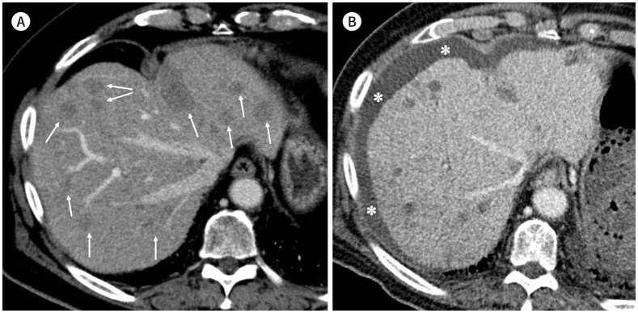
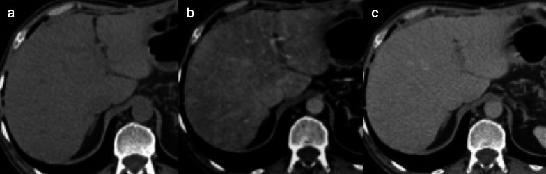

1801 — Bệnh gan do thuyên tắc phóng xạ (REILD) sau TARE Y-90: cổ trướng – vàng da 4–8 tuần, teo gan & phân biệt với tiến triển u
Tags: pattern:co-truong pattern:suy-gan-sau-can-thiep vung:gan score:ALBI protocol:TARE-Y90 protocol:CT-MRI-dong-hoc
Mức chắc chắn (certainty): tổng hợp y văn (literature synthesis) — tổng quan biến chứng TARE 2025 (Kim GM, J Korean Soc Radiol, PMC12328914), tổng quan liều Y-90 2025 (Lee IJ, Korean J Radiol, PMC12235541), cohort TARE hai thùy 2023 (Jeschke M, Cancers, PMC10486761), định nghĩa REILD & ALBI 2021 (Lescure C, Cancers, PMC8345032), liều mô gan lành 2021 (Sankhla T, Cancers, PMC8508412). Số liệu trích trực tiếp; chỗ chưa có số ghi "chưa rõ".
1. Tổng quan bệnh học – cơ chế hình ảnh
- Vì sao gọi là "bệnh gan do thuyên tắc phóng xạ": TARE (transarterial radioembolization) đưa vi cầu gắn Y-90 vào nhánh động mạch nuôi u. Tia β của Y-90 chỉ đi được trung bình 2,5 mm, tối đa 10 mm trong mô (Kim GM 2025) → tác dụng chủ yếu tại chỗ, nhưng nhu mô gan lành quanh u vẫn nhận liều (nhất là khi điều trị cả thùy/cả gan).
- Chuỗi mô bệnh: liều xạ lên tế bào nội mô xoang gan → tắc xoang gan – tĩnh mạch nhỏ (veno-occlusive disease/SOS) → ứ máu xoang + thiếu máu cục bộ tiểu thùy → hoại tử tế bào gan → giảm tổng hợp albumin, ứ mật trong tiểu quản, tăng áp cửa sau xoang → cổ trướng. Đây chính là cùng cơ chế SOS/VOD của bài 124, chỉ khác tác nhân (xạ thay vì hóa chất/ghép tế bào gốc).
- Định nghĩa thực hành (Sangro, dùng trong hầu hết nghiên cứu): vàng da với bilirubin > 3 mg/dL (51,3 µmol/L) + cổ trướng mới, xuất hiện 4–8 tuần sau TARE, không có tiến triển u và không có tắc đường mật (Lee IJ 2025; Lescure 2021). Thể muộn có thể tới 6 tháng và dễ bị bỏ sót vì không còn mang nhãn "REILD" (Lee IJ 2025).
- Tần suất — vì sao số liệu dao động rất rộng:
- Tổng quan 2025: 1,0–5,4% (Kim GM 2025).
- Tổng quan khác: 2,2–31% tùy định nghĩa, kỹ thuật và nền bệnh gan (Jeschke 2023).
- Điều trị CẢ GAN một lần (single-session bilobar): 20/33 = 60,6% có suy gan, trung vị 106 ngày sau TARE (75,6 ngày sau thùy thứ hai); chỉ bệnh nhân xơ gan mới gặp; trung vị sống 5,2 tháng so với 22,1 tháng ở nhóm không suy gan (Jeschke 2023). → Kỹ thuật quyết định nguy cơ hơn cả liều.
- Theo chức năng gan nền: ALBI 1 → 3,4% so với ALBI 2–3 → 16,8% REILD sau lần TARE đầu (OR 5,7; 95%CI 1,6–19,5) (Lescure 2021).
- Di căn đại tràng dùng vi cầu nhựa: 2/45 = 4,4% REILD (Sankhla 2021).
- Yếu tố nguy cơ định lượng (dùng để chọn bệnh nhân):
- Bilirubin > 2 mg/dL hoặc cổ trướng không do u → không nên TARE (Lee IJ 2025).
- Hoạt độ trên thể tích đích > 0,8 GBq/L làm tăng biến cố gan (Gil-Alzugaray, dẫn trong Lee IJ 2025).
- Liều mô gan lành toàn bộ: xơ gan Child–Pugh A chịu được 40–70 Gy với vi cầu thủy tinh, nhưng chỉ < 30–40 Gy với vi cầu nhựa (đồng thuận chuyên gia, Lee IJ 2025). Mô hình NTCP: 75 Gy toàn gan lành → 15% nguy cơ suy gan; ngưỡng hạ xuống < 50 Gy nếu bilirubin > 1,1 mg/dL và < 90 Gy nếu bilirubin < 1,1 mg/dL (Chiesa, dẫn trong Lee IJ 2025).
- Phần gan còn lại (FLR) ≥ 30% + giữ ít nhất 2 phân thùy liền nhau (Lee IJ 2025).
- Hóa trị đồng thời/trước đó (5-FU, capecitabine, oxaliplatin, irinotecan) làm tăng nhạy xạ của nhu mô gan (Kim GM 2025).
- TẠI SAO hình ảnh trông như vậy: cổ trướng là dịch tỷ trọng nước (0–15 HU), nằm ở khoang phúc mạc quanh gan lách; gan teo lại vì hoại tử + xơ hóa tiểu thùy (đo được bằng giảm thể tích thùy được điều trị); vùng nhu mô tổn thương ngấm thuốc không đồng nhất do rối loạn tưới máu xoang; không có ống mật giãn vì tổn thương không phải tắc mật. Hình ảnh không đặc hiệu — chẩn đoán là chẩn đoán loại trừ dựa trên thời điểm + xét nghiệm + không có u sống.
2. Mẫu hình + chẩn đoán phân biệt theo vị trí (gamut)
Mẫu hình cần nhận ra: bệnh nhân ổn định trước TARE, sau 4–8 tuần (tới 6 tháng) xuất hiện cổ trướng mới ± vàng da, trên nền gan teo dần ở vùng được chiếu xạ, không có ống mật giãn, không có nốt ngấm thuốc mới.
Gamut theo cơ chế (mnemonic "U–MẬT–THUỐC–TIM–NHIỄM"):
- U (progression): u gan tiến triển, huyết khối tĩnh mạch cửa do u, di căn phúc mạc gây cổ trướng ác tính. Chốt: nốt ngấm thuốc thì động mạch mới / LR-TR Viable (bài 121).
- MẬT (biliary): hoại tử ống mật/cholangiopathy thiếu máu, hẹp đường mật, biloma, viêm đường mật (bài 179). Chốt: giãn ống mật trong gan + bilirubin tăng trước, sốt/đau.
- THUỐC (drug/chemotherapy): SOS do oxaliplatin (bệnh cảnh "gan xanh"/tăng áp cửa), viêm gan do thuốc miễn dịch, TACE trước đó. Chốt: tiền sử hóa chất + loang lổ bắt thuốc dạng bản đồ (bài 124).
- TIM (cardiac/portal): suy tim phải, huyết khối tĩnh mạch cửa, xơ gan mất bù tự nhiên. Chốt: TM cửa giãn + đảo chiều dòng, TM gan giãn, phù chi, JVP cao (bài 127).
- NHIỄM (infection): áp-xe gan, viêm phúc mạc nhiễm khuẩn nguyên phát (SBP), viêm đường mật. Chốt: sốt + bạch cầu/CRP tăng, khí/dịch có vách trong ổ.
Mẫu hình "hội chứng sau thuyên tắc" (post-embolization syndrome) hay bị đặt nhầm vào gamut này: sốt, đau, buồn nôn trong 1–7 ngày đầu, không cổ trướng, không tăng bilirubin đáng kể, tự hết — khác hẳn REILD về thời điểm.
3. Bảng so sánh phân biệt (ma trận đối chiếu)
| Thực thể (entity) | Hình ảnh điển hình | Chốt vào (rule-in) | Chốt loại (rule-out) | Gợi ý xác nhận |
|---|---|---|---|---|
| REILD | Cổ trướng mới; gan teo vùng xạ; ngấm thuốc không đồng nhất; không giãn ống mật; không nốt mới | Cổ trướng/vàng da 4–8 tuần sau TARE + bilirubin > 3 mg/dL + loại trừ u tiến triển & tắc mật | Có nốt ngấm mạnh thì động mạch mới → tiến triển u; có giãn ống mật → tắc mật | LFT/ALBI mỗi 2–4 tuần; CT/MRI 4 thì; đối chiếu liều & thể tích gan xạ |
| Tiến triển u (LR-TR Viable) | Nốt/tổn thương ngấm thuốc thì động mạch, bờ không đều, có thể xâm lấn TM cửa | Ngấm thuốc điển hình u sống + tăng AFP | Nhu mô ngấm không đồng nhất không có nốt + AFP ổn định → không phải tiến triển | MRI gadoxetic 4 thì; so phim trước; AFP |
| Tắc/hẹp đường mật (BDN, stricture) | Giãn ống mật trong gan thuôn ngoại vi; có thể biloma/hẹp rốn gan | Giãn ống mật thật trên MRCP/US + bilirubin tăng sớm | Không giãn ống mật → loại tắc mật | MRCP; ALP tăng sớm (bài 179) |
| SOS do hóa chất (oxaliplatin) | Loang lổ bắt thuốc dạng bản đồ thì cửa; gan to; tăng áp cửa; nốt FNH-like | Tiền sử oxaliplatin + mô hình bản đồ + lách to | Không có tiền sử hóa chất, tổn thương khu trú theo vùng xạ → nghĩ REILD | MRI: phù quanh TM cửa, tăng tín hiệu T2 vùng rìa; đánh giá lách |
| Suy tim phải / bệnh gan tim | TM gan giãn, TM cửa giãn, gan to "nutmeg", phù, tràn dịch màng phổi | TM gan giãn + JVP cao + BNP | TM gan bình thường, không phù → loại | Doppler TM gan (phổ 3 pha), siêu âm tim |
| Huyết khối tĩnh mạch cửa | Khuyết thuốc trong lòng TM cửa, cavernous transformation nếu mạn | Khuyết thuốc lòng mạch + bàng hệ | Lòng TM cửa thông tốt → loại | CT động học; Doppler |
| Áp-xe / SBP / viêm đường mật | Ổ dịch bờ dày ± khí; dịch phúc mạc có vách/khí; dày thành túi mật | Sốt + bạch cầu/CRP tăng + khí/dịch có vách | Không sốt, dịch trong, không khí → không nhiễm | Chọc hút/cấy dịch; CT |
| Hội chứng sau thuyên tắc | Không có cổ trướng; CT gần như bình thường | Sốt/đau trong 7 ngày đầu, tự hết | Triệu chứng sau 2–4 tuần + cổ trướng → không phải hội chứng này | Theo dõi lâm sàng, không cần hình ảnh lặp |
4. Protocol chụp + hệ phân độ/điểm chuẩn hóa
Trước TARE — chọn bệnh nhân (phòng REILD là chính):
- Bilirubin ≤ 2 mg/dL, không cổ trướng không do u; Child–Pugh A–B7, ALBI 1 là nhóm an toàn nhất.
- Thể tích u < 50% gan, FLR ≥ 30% và giữ ≥ 2 phân thùy liền nhau.
- Lập kế hoạch liều: đánh giá phân bố vi cầu (MAA scan), tính liều mô gan lành (NTL) — mục tiêu **< 30–40 Gy với vi cầu nhựa**, **40–70 Gy với vi cầu thủy tinh** ở Child–Pugh A; hạ ngưỡng khi bilirubin > 1,1 mg/dL.
- Ưu tiên điều trị theo thùy/phân thùy, tuần tự thay vì cả gan một lần — đây là can thiệp làm giảm REILD rõ nhất (Jeschke 2023).
Sau TARE — theo dõi:
- Xét nghiệm gan (bilirubin, albumin, ALBI, INR) lúc nền, 2 tuần, 4 tuần, rồi mỗi 4 tuần đến 3 tháng, sau đó mỗi 3 tháng. ALBI đổi trước bilirubin (37,2% bệnh nhân xấu đi ALBI sau một lần TARE — Lescure 2021).
- Hình ảnh: CT/MRI gan 4 thì 1 tháng, 3 tháng, sau đó mỗi 3 tháng; đọc cả đáp ứng u (LI-RADS treatment response) lẫn nhu mô gan lành (thể tích, cổ trướng, phù quanh TM cửa).
- Siêu âm khi nghi cổ trướng/tắc mật; MRCP nếu bilirubin tăng để loại tắc mật trước khi gán cho REILD.
- Đo thể tích gan trên cùng mặt phẳng/cùng thì để phát hiện teo tiến triển (không đo bằng mắt).
flowchart TD
A[Sau TARE 2-12 tuần: cổ trướng mới và/hoặc vàng da] --> B[CT/MRI gan 4 thì + MRCP khi bilirubin tăng]
B --> C{Có nốt ngấm thuốc thì động mạch mới hoặc huyết khối cửa do u?}
C -->|Có| D[Tiến triển u - điều trị theo giai đoạn, không phải REILD]
C -->|Không| E{Có giãn ống mật thật / biloma / viêm đường mật?}
E -->|Có| F[Tắc mật hoặc nhiễm đường mật - xử trí theo bài 179]
E -->|Không| G{Có sốt, khí/dịch có vách, CRP tăng mạnh?}
G -->|Có| H[Nhiễm trùng: áp-xe, SBP, viêm đường mật]
G -->|Không| I{Bilirubin > 3 mg/dL + cổ trướng, 4-8 tuần sau TARE?}
I -->|Có| J[REILD]
I -->|Không| K[Theo dõi tiếp: ALBI, Doppler TM gan, siêu âm tim]
J --> L[Lợi tiểu + albumin; ngừng/hoãn TARE cả gan; điều trị yếu tố thúc đẩy]
L --> M{Cổ trướng kháng trị hoặc suy gan tiến triển?}
M -->|Có| N[Cân nhắc ghép gan / chăm sóc giảm nhẹ; tiên lượng xấu]
M -->|Không| O[Theo dõi ALBI 4 tuần/lần đến 3 tháng, hình ảnh 3 tháng]
Điều trị (theo nguồn):
- Không có thuốc đặc hiệu. Điều trị hỗ trợ: lợi tiểu + albumin, kiểm soát nhiễm trùng, ngừng thuốc gây độc gan.
- Dự phòng bằng ursodeoxycholic acid + methylprednisolone giảm liều trong 2 tháng (bắt đầu ngày TARE) chỉ từ một nghiên cứu một nhánh, chưa được xác nhận tiền cứu (Kim GM 2025) — không dùng thường quy.
- Không lặp TARE cả gan khi đã có REILD; nếu cần điều trị tiếp, chọn vùng đích nhỏ hơn hoặc phương thức khác.
- Tiên lượng: REILD làm tăng nguy cơ tử vong HR 3,5 (95%CI 1,4–8,6) và rút ngắn sống còn rõ rệt (5,2 so với 22,1 tháng — Jeschke 2023).
5. Biến thể bình thường và cạm bẫy
- Cạm bẫy số 1 — "teo gan là đáp ứng tốt": teo thùy được xạ có thể là dấu hiệu tổn thương, không phải lúc nào cũng là điều trị hiệu quả. Phải đọc kèm cổ trướng, albumin, bilirubin, thể tích gan lành còn lại.
- Cạm bẫy số 2 — gán cổ trướng cho xơ gan nền: bệnh nhân TARE thường có xơ gan; cổ trướng mới sau 4–8 tuần ở người trước đó không có cổ trướng phải coi là REILD cho đến khi loại trừ.
- Cạm bẫy số 3 — bilirubin bình thường ở tuần 2: REILD có thể khởi phát sau 4–8 tuần, thậm chí tới 6 tháng; một lần xét nghiệm bình thường không loại trừ. ALBI/albumin đổi sớm hơn.
- Cạm bẫy số 4 — nhầm với tiến triển u: nhu mô ngấm thuốc loang lổ, không tạo khối khác với nốt ngấm mạnh thì động mạch của u sống. Đừng đổi điều trị vì "bắt thuốc không đều" mà chưa so phim và đo AFP.
- Cạm bẫy số 5 — hội chứng sau thuyên tắc: sốt/đau trong tuần đầu là bình thường; nhưng sốt + đau kéo dài > 2 tuần phải loại áp-xe/viêm đường mật, không được mặc định là hội chứng sau thuyên tắc.
- Cạm bẫy số 6 — bỏ sót tắc mật: bilirubin tăng do REILD không kèm giãn ống mật; nếu có giãn ống mật, nguyên nhân là tắc mật (bài 179) và điều trị khác hoàn toàn.
- Biến thể bình thường: sau TARE, vùng rìa thùy được xạ giảm ngấm thuốc nhẹ, đều, không tạo khối và không kèm cổ trướng — theo dõi, không can thiệp.
6. Tự lượng giá — Blind Quiz ngay trên trang tĩnh
Ca 1 — Nam 75 tuổi, di căn gan đa ổ của u thần kinh nội tiết, TARE Y-90 liều đích 120 Gy cho TOÀN GAN. Trước thủ thuật chức năng gan bình thường, Child–Pugh A. Ảnh (A) trước, (B) sau 11 tuần.

- Gợi ý lâm sàng: không sốt, không đau bụng; bilirubin 5,5 mg/dL, albumin 2,2 g/dL, Child–Pugh C.
- Câu hỏi: (1) Hai dấu hiệu chính trên ảnh B là gì? (2) Vì sao không nghĩ tiến triển u? (3) Chẩn đoán và yếu tố nguy cơ chính?
Bấm để hiện đáp án (findings + chẩn đoán)
- Findings: (A) nhiều ổ di căn giảm tỷ trọng rải rác hai thùy (mũi tên); (B) sau 11 tuần: thể tích gan giảm và cổ trướng mới (dấu *) quanh gan/lách. Nhu mô gan không có nốt ngấm thuốc mới, không giãn ống mật.
- Chẩn đoán: REILD sau TARE toàn gan một lần.
- Vì sao: đúng thời điểm 4–8 tuần (ở đây 11 tuần), bilirubin 5,5 mg/dL (> 3 mg/dL) + cổ trướng mới, không có u sống/tắc mật. Yếu tố nguy cơ chính là điều trị cả gan trong một lần — trong cohort bilobar, 60,6% bệnh nhân suy gan (Jeschke 2023).
- Nguồn ảnh: Kim GM, J Korean Soc Radiol 2025, PMC12328914 Fig. 1 (CC BY-NC 4.0).
Ca 2 — Nam 64 tuổi, ung thư đại tràng di căn gan, đang dùng oxaliplatin. CT (a) trước tiêm, (b) thì tĩnh mạch cửa, (c) thì muộn.

- Gợi ý lâm sàng: không vàng da; xét nghiệm gan tăng nhẹ; lách to.
- Câu hỏi: (1) Mô tả kiểu bắt thuốc ở thì cửa? (2) Cơ chế? (3) Vì sao đây là hàng phân biệt của REILD?
Bấm để hiện đáp án (findings + chẩn đoán)
- Findings: thì cửa bắt thuốc loang lổ, dạng bản đồ (map-like/patchy), xen vùng giảm và tăng ngấm, không tạo khối; thì muộn cân bằng dần.
- Chẩn đoán: tắc xoang gan (SOS/VOD) do oxaliplatin — cùng cơ chế tổn thương nội mô xoang như REILD.
- Vì sao quan trọng: khi bệnh nhân sau TARE có tiền sử oxaliplatin, hình ảnh "bản đồ" này có thể cộng thêm vào tổn thương xạ; ngược lại, REILD thuần túy thường chỉ có cổ trướng + teo gan, không có mảng bản đồ rõ. Phân biệt bằng bối cảnh thuốc + phân bố theo vùng tưới máu.
- Nguồn ảnh: Albano D et al., Insights Imaging 2021, PMC8192650 Fig. 15 (CC BY 4.0).
Bài liên quan chéo
- 124 – Bệnh mạch máu gan: Budd-Chiari, tắc xoang gan (SOS/VOD) & huyết khối tĩnh mạch cửa
- 179 – Hoại tử ống mật & cholangiopathy thiếu máu sau TACE/TARE/RFA
- 121 – LI-RADS: đọc đáp ứng điều trị (LR-TR) trên CT/MRI
- 127 – Gan tim & tăng áp cửa do tắc nghẽn dòng ra
- 930 – Ung thư gan: TACE, RFA và nguyên lý can thiệp
- 1806 – Viêm phổi do xạ sau TARE: kính mờ quanh rốn phổi & ngưỡng liều phổi
Ảnh
1801_REILD_CT_JKSRadiol2025-f1.jpg— Kim GM, J Korean Soc Radiol 2025, PMC12328914 Fig. 1, CC BY-NC 4.0.1801_SOS-loang-lo_CT_InsightsImaging2021-f15.jpg— Albano D et al., Insights Imaging 2021, PMC8192650 Fig. 15, CC BY 4.0.- Chi tiết nguồn/giấy phép:
images/CREDITS.md.
Không dùng để chẩn đoán độc lập khi chưa có người hướng dẫn.